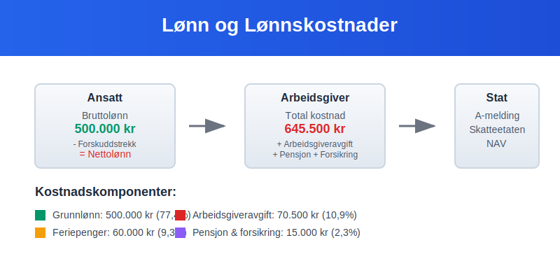
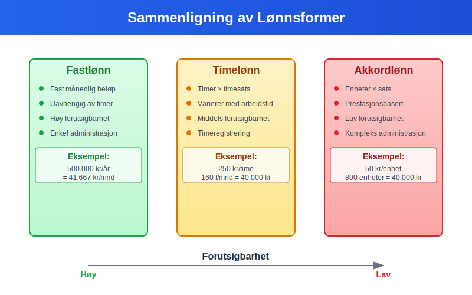
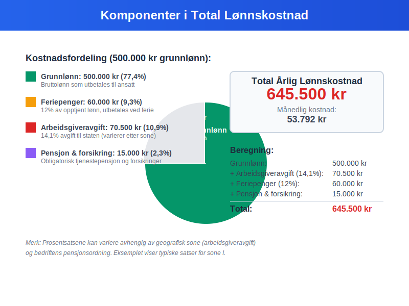
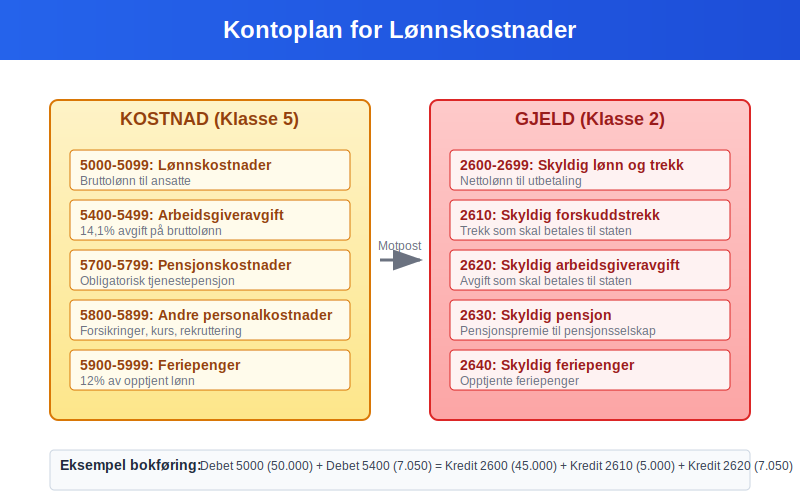
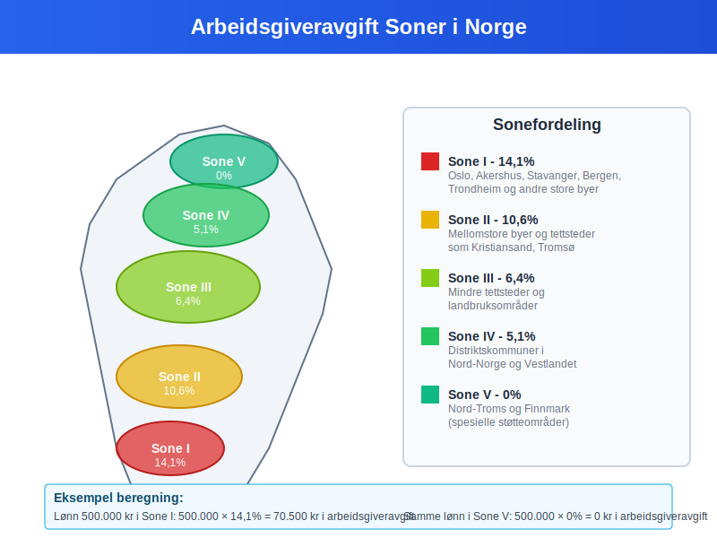
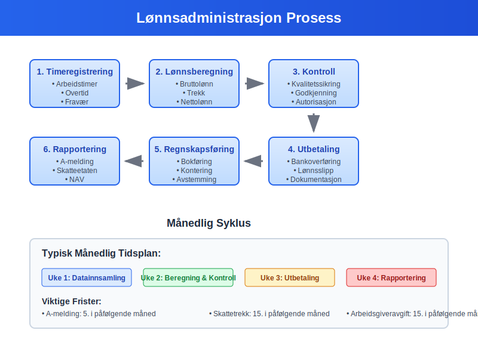
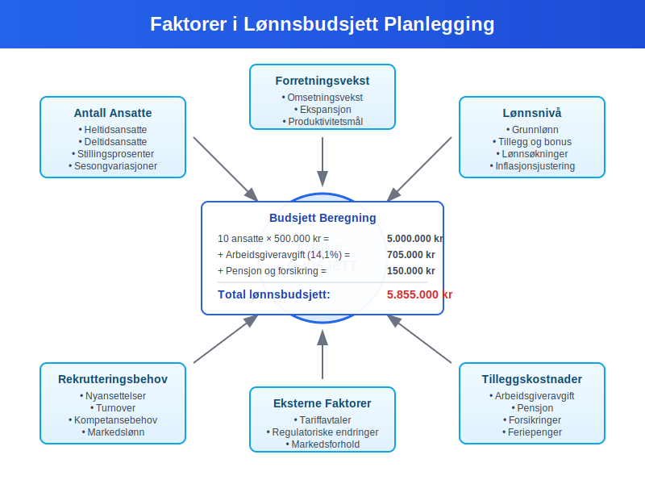

Lønn er kompensasjon som utbetales til ansatte for utført arbeid og representerer en av de største kostnadene for de fleste bedrifter. I regnskapssammenheng omfatter lønn ikke bare grunnlønnen, men også alle tillegg, naturalytelser og arbeidsgiveravgift. Forståelse av ulike lønnsformer og deres regnskapsmessige behandling er avgjørende for korrekt bokføring og budsjettering.
Se også Hva er Lønnslipp? for en full oversikt over lønnsspecifikasjon og regnskapsføring av lønn.

Se også Lønnstyper for en fullstendig oversikt over lønnstyper.
Ulike Lønnsformer
Fastlønn
Fastlønn er den vanligste lønnsformen i Norge og innebærer en fast månedlig eller årlig utbetaling uavhengig av arbeidstimer:
- Forutsigbar for både arbeidsgiver og arbeidstaker
- Fast kostnad i bedriftens driftsregnskap
- Grunnlag for beregning av feriepenger
- Stillingsprosent bestemmer utbetalingsbeløpet
- Lønnsprogresjon basert på ansiennitet og erfaring
Timelønn
Timelønn beregnes basert på antall arbeidstimer og en fast timesats:
- Fleksibel kostnad som varierer med aktivitetsnivået
- Overtidstillegg ved arbeid utover normalarbeidstid
- Dokumentasjon av arbeidstimer er påkrevet
- Vanlig i bransjer med varierende arbeidsmengde
Akkordlønn
Akkordlønn baseres på produserte enheter eller utført arbeidsmengde:
- Prestasjonsbasert kompensasjon
- Motiverer til høy produktivitet
- Variabel kostnad for bedriften
- Krav til minstelønn må overholdes

| Lønnsform | Beregningsgrunnlag | Kostnadsprediktabilitet | Administrasjon |
|---|---|---|---|
| Fastlønn | Fast måneds-/årsbeløp | Høy | Enkel |
| Timelønn | Timer × timesats | Middels | Middels |
| Akkordlønn | Enheter × sats | Lav | Kompleks |
| Provisjonslønn | Salg × provisjonssats | Lav | Kompleks |
Lønnskostnader for Arbeidsgiveren
Totale Lønnskostnader
Arbeidsgiverens totale lønnskostnad består av flere komponenter utover grunnlønnen:

| Kostnadselement | Beskrivelse | Prosentsats |
|---|---|---|
| Grunnlønn | Bruttolønn til ansatt | 100% |
| Arbeidsgiveravgift | Trygdeavgift til staten | 14,1% (varierer etter sone) |
| Pensjon | Obligatorisk tjenestepensjon | Minimum 2% av lønn 1G-12G |
| Forsikringer | Yrkesskadeforsikring, gruppelivsforsikring | 0,5-2% |
| Feriepenger | 12% av opptjent lønn | 12% |
Beregningseksempel
For en ansatt med 500.000 kr i årslønn:
Grunnlønn: 500.000 kr
Arbeidsgiveravgift: 70.500 kr (14,1%)
Pensjon: 10.000 kr (2,0%)
Forsikringer: 5.000 kr (1,0%)
Feriepenger: 60.000 kr (12,0%)
─────────────────────────────────────
Total årlig kostnad: 645.500 kr
Regnskapsføring av Lønn
Månedlig Lønnsføring
Lønn føres månedlig som en driftskostnad i bedriftens regnskap:
Debet: Lønnskostnad 50.000 kr
Debet: Arbeidsgiveravgift 7.050 kr
Debet: Pensjonskostnad 1.000 kr
Kredit: Skyldig lønn 45.000 kr
Kredit: Skyldig forskuddstrekk 5.000 kr
Kredit: Skyldig arbeidsgiveravgift 7.050 kr
Kredit: Skyldig pensjon 1.000 kr
For mer om konto for forskuddstrekk, se Konto 2600 - Skyldig forskuddstrekk.
Kontoplan for Lønn
Lønn registreres i følgende kontoklasser:

| Kontotype | Kontonummer | Beskrivelse |
|---|---|---|
| Kostnad | 5000-5099 | Lønnskostnader |
| Kostnad | 5400-5499 | Arbeidsgiveravgift |
| Kostnad | 5700-5799 | Pensjonskostnader |
| Gjeld | 2600-2699 | Skyldig lønn og trekk |
Ansattreskontro
All lønn må registreres i den ansattes ansattreskontro:
- Bruttolønn per måned
- Forskuddstrekk og andre trekk (resulterer i nettolønn)
- Feriepenger opptjening og utbetaling
- Naturalytelser og skattepliktige fordeler
- Sykepenger og andre refusjoner
Skattemessige Forhold
Skatteplikt for Ansatte
Lønn er skattepliktig inntekt som behandles som:
- Lønnsinntekt i selvangivelsen
- Forskuddstrekk trekkes månedlig av arbeidsgiver basert på marginalskatt
- Grunnlag for beregning av pensjon og trygd
- Fradrag kan gjøres for arbeidsrelaterte utgifter
Minstefradrag for Lønnstakere
Alle lønnstakere får automatisk minstefradrag i sin selvangivelse. Dette standardiserte fradraget dekker vanlige arbeidsrelaterte utgifter og utgjør:
- 46% av lønnsinntekt (maksimalt kr 104 850 for 2024)
- Automatisk utfylling i selvangivelsen
- Alternativ til faktiske utgifter - velg det som gir høyest fradrag
- Ingen dokumentasjonskrav - forenkler skatteberegningen
Minstefradrag er en betydelig skattefordel som de fleste lønnstakere får uten å måtte dokumentere arbeidsrelaterte kostnader.
Arbeidsgiveravgift
Arbeidsgiveravgift er en avgift arbeidsgiver betaler til staten:

| Sone | Prosentsats | Geografisk område |
|---|---|---|
| Sone I | 14,1% | Oslo, Akershus, store byer |
| Sone II | 10,6% | Mellomstore byer og tettsteder |
| Sone III | 6,4% | Mindre tettsteder |
| Sone IV | 5,1% | Distriktskommuner |
| Sone V | 0% | Nord-Troms og Finnmark |
Frikortgrense
Ansatte med lav lønn kan søke om frikort hvis årsinntekten er under frikortgrensen:
- Ingen forskuddstrekk ved lønn under grensen
- Særlig aktuelt for studenter og deltidsansatte
- Må søkes hvert år hos Skatteetaten
Juridiske Krav og Regulering
Arbeidsmiljøloven
Arbeidsmiljøloven regulerer viktige aspekter ved lønn:
- Minstelønn der tariffavtaler gjelder
- Normalarbeidstid maksimalt 40 timer per uke
- Overtidsbetaling ved arbeid utover normal tid
- Likestilling og forbud mot diskriminering
Tariffavtaler
Tariffavtaler kan regulere:
- Minstelønn for ulike stillingsgrupper
- Lønnstrinn og karriereutvikling
- Tillegg for spesielle kvalifikasjoner
- Arbeidstidsordninger og fleksibilitet
A-melding
All lønn må rapporteres månedlig via a-meldingen:
- Bruttolønn per måned
- Forskuddstrekk og andre trekk
- Naturalytelser og skattepliktige fordeler
- Arbeidsgiveravgift grunnlag
Lønnsadministrasjon
Lønnsrutiner
Effektiv lønnsadministrasjon krever:

- Timeregistrering og dokumentasjon
- Månedlig lønnskjøring med kontroll
- Rapportering til myndigheter
- Arkivering av lønnsbilag og dokumentasjon
Digitale Løsninger
Moderne lønnsystemer tilbyr:
- Automatisert beregning av lønn og trekk
- Integrering med regnskapssystem
- Selvbetjening for ansatte
- Automatisk rapportering til myndigheter
Internkontroll
God internkontroll for lønn inkluderer:
- Autorisasjon av lønnsendringer
- Kontroll av timeregistrering
- Avstemming av lønnskontoer
- Dokumentasjon av alle transaksjoner
Naturalytelser og Tillegg
Vanlige Naturalytelser
Naturalytelser er skattepliktige fordeler utover kontantlønn:
| Naturalytelse | Verdsettelse | Skattemessig behandling |
|---|---|---|
| Firmabil | Listepris × 30% | Skattepliktig tillegg |
| Telefon | Faktisk kostnad | Skattepliktig hvis privat bruk |
| Internett | Faktisk kostnad | Skattepliktig hvis hjemmebruk |
| Forsikringer | Premie betalt av arbeidsgiver | Skattepliktig fordel |
Frynsegoder
Frynsegoder kan omfatte:
- Subsidierte måltider i bedriftskantine
- Treningsfasiliteter og helsestudio
- Parkering på arbeidsplassen
- Rabatter på bedriftens produkter
- Opsjonsavtaler som langsiktig incentivordning
Lønnsbudsjett og Planlegging
Budsjettplanlegging
Ved utarbeidelse av lønnsbudsjett må bedriften vurdere:

- Antall ansatte og stillingsprosenter
- Lønnsnivå og forventede økninger
- Rekrutteringsbehov og turnover
- Sesongvariasjoner i bemanning
Lønnsomhetsanalyse
Lønn påvirker bedriftens lønnsomhet som:
- Fast kostnad ved fastlønn
- Variabel kostnad ved time- eller akkordlønn
- Viktig komponent i dekningsbidrag analyser
- Påvirker nullpunkt beregninger
Kostnadsoptimalisering
Bedrifter kan optimalisere lønnskostnader gjennom:
- Effektiv bemanning og ressursplanlegging
- Kompetanseutvikling for økt produktivitet
- Fleksible arbeidsordninger som hjemmekontor
- Automatisering av rutineoppgaver
Internasjonale Forhold
Utenlandske Ansatte
Ved ansettelse av utenlandske arbeidstakere må bedriften vurdere:
- Skatteplikt i Norge vs. hjemland
- Trygdeavtaler og sosiale rettigheter
- Arbeids- og oppholdstillatelser
- Rapportering til norske myndigheter
Utsendte Arbeidstakere
Utsendte arbeidstakere til utlandet krever spesiell behandling:
- Skattemessig bosted og skatteplikt
- Sosiale ytelser og trygderettigheter
- Valutaomregning av lønn og kostnader
- Rapportering til relevante myndigheter
Fremtidige Trender
Digitalisering
Digitale løsninger endrer lønnsadministrasjon:
- Kunstig intelligens i lønnsberegninger
- Blockchain for sikker lønnsutbetaling
- Sanntidsrapportering til myndigheter
- Selvbetjening og automatisering
Fleksible Arbeidsformer
Nye arbeidsformer påvirker lønnsbegrepet:
- Gig-økonomi og frilansere
- Hjemmekontor og hybride løsninger
- Kompetansebasert lønn fremfor timebasert
- Bærekraftige lønnsordninger
Regulatoriske Endringer
Kommende endringer kan påvirke lønn:
- EU-direktiver om lønnsåpenhet
- Miljø- og bærekraftskrav til lønnsordninger
- Digitale rapporteringskrav
- Internasjonale skatteregler
Utfordringer og Risiko
Compliance-risiko
Regelverksbrudd kan medføre:
- Bøter fra Arbeidstilsynet
- Tilleggsskatt og renter
- Omdømmetap og rekrutteringsutfordringer
- Juridiske konsekvenser
Operasjonell Risiko
Lønnsadministrasjon kan ha risiko for:
- Feilutbetalinger og korreksjoner
- Systemfeil og datatap
- Svindel og misligheter
- Personvernbrudd og GDPR-sanksjoner
Konklusjon
Lønn er en kompleks og kritisk del av bedriftsdriften som krever grundig forståelse av regnskapsmessige, skattemessige og juridiske forhold. Korrekt håndtering av lønnskostnader er avgjørende for bedriftens økonomistyring og overholdelse av regelverket. Med økende digitalisering og endrede arbeidsformer vil lønnsadministrasjon fortsette å utvikle seg, men grunnprinsippene for regnskapsføring og rapportering forblir fundamentale for alle bedrifter.
Relaterte Begreper
- Bruttolønn
- Nettolønn
- Lønnskostnad
- Personalutgifter
- Arbeidsgiveravgift
- Forskuddstrekk
- Feriepenger
- Naturalytelser
- Ansattreskontro
- A-melding